Kmeans shlukování – Vývoj
Generace 0
Generace 1

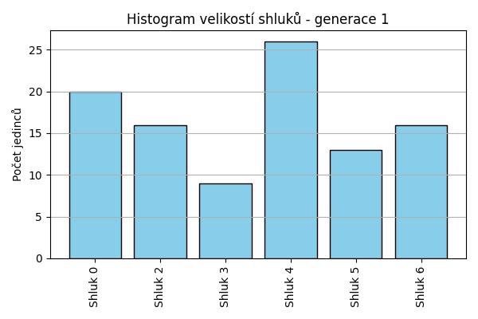
Posun centroidů mezi generací 0 → 1:
- Shluk 0: 559.2430
- Shluk 1: 631.8194
- Shluk 2: 707.3009
- Shluk 3: 915.1239
- Shluk 4: 567.5824
- Shluk 5: 438.0115

Generace 2


Posun centroidů mezi generací 1 → 2:
- Shluk 0: 270.1012
- Shluk 1: 182.0691
- Shluk 2: 472.8450
- Shluk 3: 693.1965
- Shluk 4: 578.6732
- Shluk 5: 678.0949
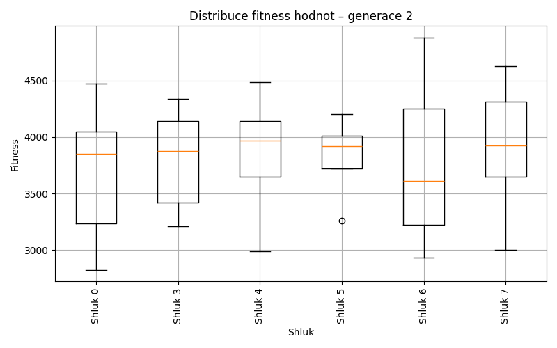
Generace 3
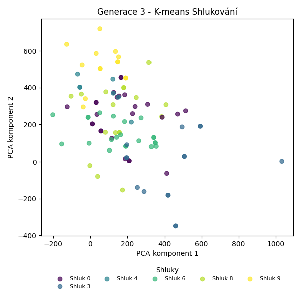

Posun centroidů mezi generací 2 → 3:
- Shluk 0: 111.3840
- Shluk 1: 574.1671
- Shluk 2: 742.5016
- Shluk 3: 428.4663
- Shluk 4: 756.1560
- Shluk 5: 785.5745

Generace 4
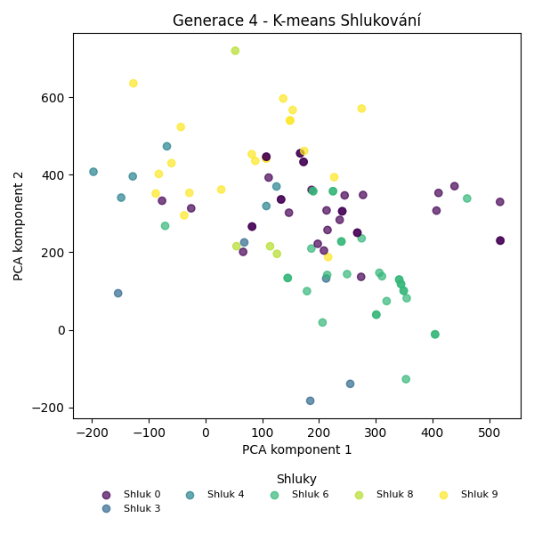
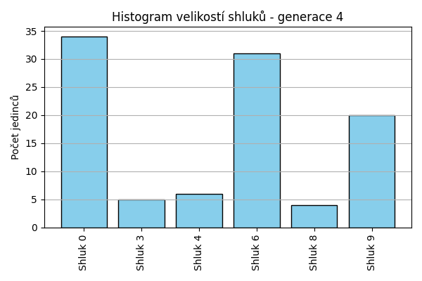
Posun centroidů mezi generací 3 → 4:
- Shluk 0: 121.9977
- Shluk 1: 356.5716
- Shluk 2: 176.5054
- Shluk 3: 316.4410
- Shluk 4: 615.1480
- Shluk 5: 824.2701
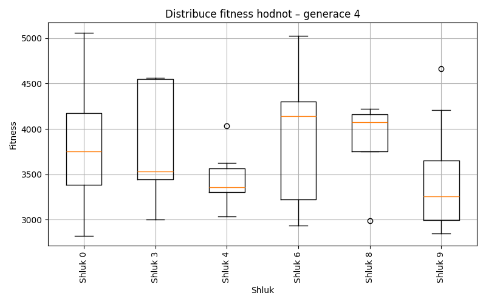
Generace 5

Posun centroidů mezi generací 4 → 5:
- Shluk 0: 427.3228
- Shluk 1: 521.7540
- Shluk 2: 406.3445
- Shluk 3: 512.9787
- Shluk 4: 1077.2186
- Shluk 5: 918.1627

Generace 6
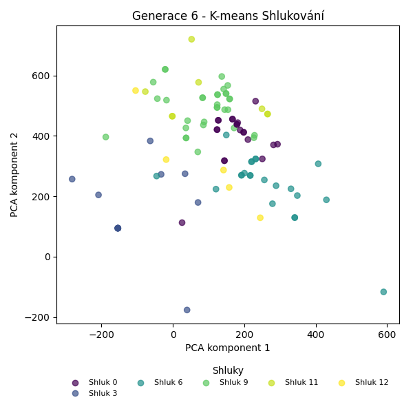

Posun centroidů mezi generací 5 → 6:
- Shluk 0: 543.2983
- Shluk 1: 120.8332
- Shluk 2: 179.9221
- Shluk 3: 217.8208
- Shluk 4: 387.3990
- Shluk 5: 281.5766
Generace 7
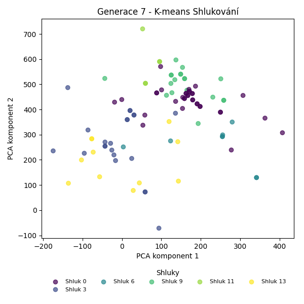

Posun centroidů mezi generací 6 → 7:
- Shluk 0: 719.8152
- Shluk 1: 475.9500
- Shluk 2: 763.9530
- Shluk 3: 940.0143
- Shluk 4: 803.8407
- Shluk 5: 618.3048
Generace 8
Posun centroidů mezi generací 7 → 8:
- Shluk 0: 851.1683
- Shluk 1: 636.5909
- Shluk 2: 1102.1936
- Shluk 3: 881.8307
- Shluk 4: 695.9978
- Shluk 5: 448.9533
Generace 9


Posun centroidů mezi generací 8 → 9:
- Shluk 0: 88.9136
- Shluk 1: 523.8830
- Shluk 2: 485.3574
- Shluk 3: 173.9367
- Shluk 4: 1034.9132
- Shluk 5: 625.1147
Generace 10
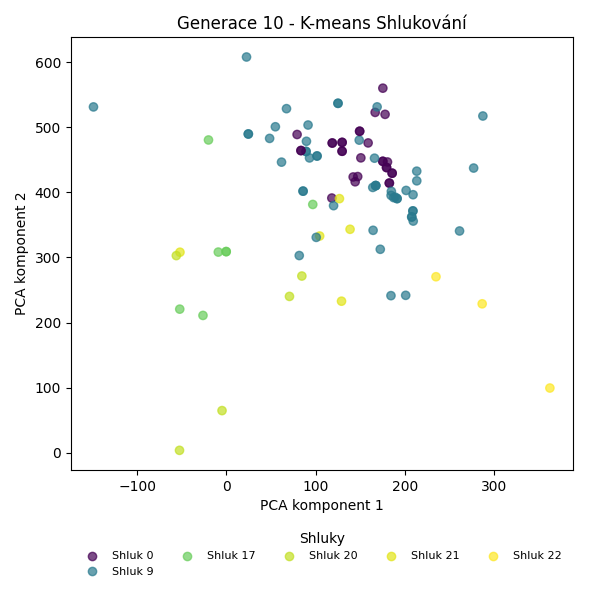
Posun centroidů mezi generací 9 → 10:
- Shluk 0: 112.2511
- Shluk 1: 226.3024
- Shluk 2: 227.4322
- Shluk 3: 190.4726
- Shluk 4: 68.5458
- Shluk 5: 384.7320

Generace 11
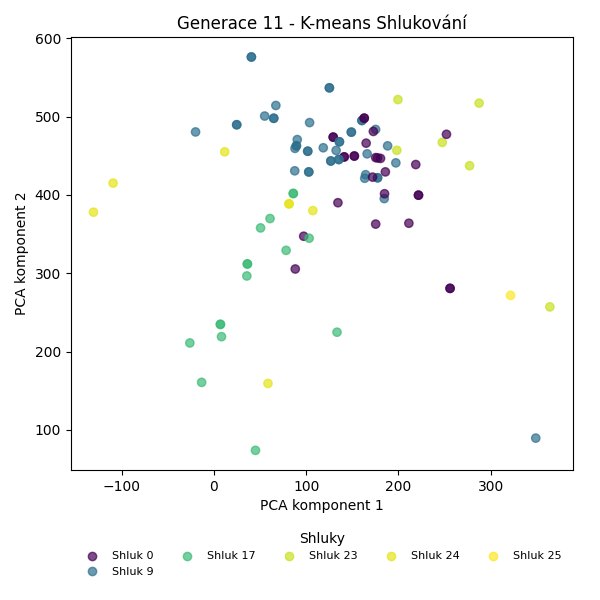
Posun centroidů mezi generací 10 → 11:
- Shluk 0: 400.6894
- Shluk 1: 109.8262
- Shluk 2: 685.8716
- Shluk 3: 736.6033
- Shluk 4: 1520.9465
- Shluk 5: 976.4066
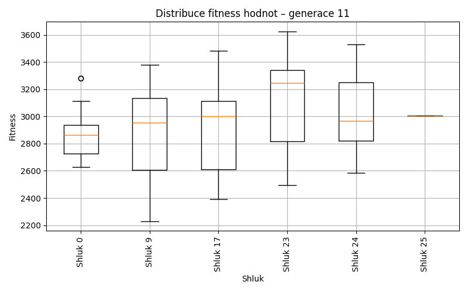
Generace 12
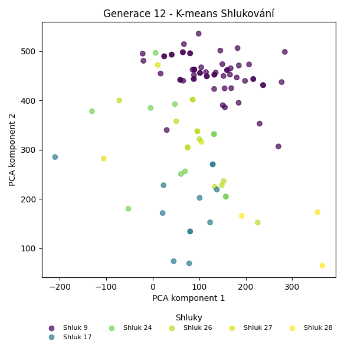

Posun centroidů mezi generací 11 → 12:
- Shluk 0: 204.3286
- Shluk 1: 290.9615
- Shluk 2: 702.7818
- Shluk 3: 142.6001
- Shluk 4: 203.6213
- Shluk 5: 129.5498
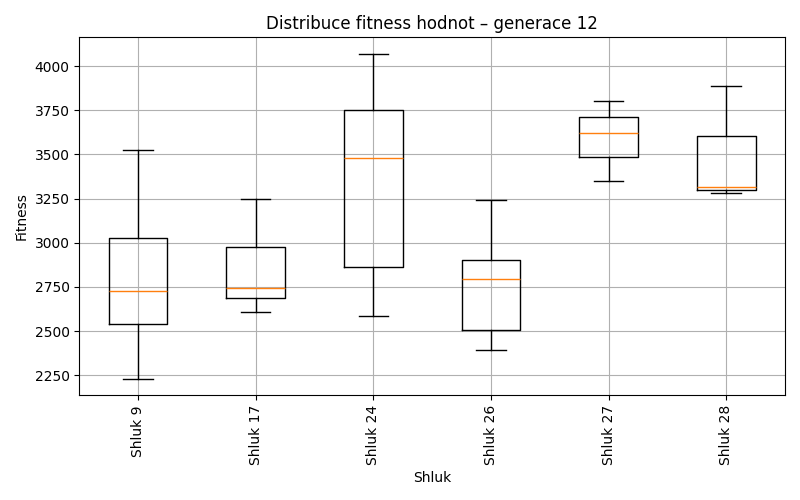
Generace 13
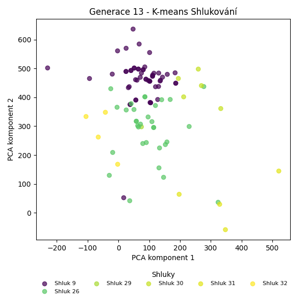
Posun centroidů mezi generací 12 → 13:
- Shluk 0: 200.6235
- Shluk 1: 952.1061
- Shluk 2: 678.7592
- Shluk 3: 649.4703
- Shluk 4: 538.1001
- Shluk 5: 190.5571

Generace 14
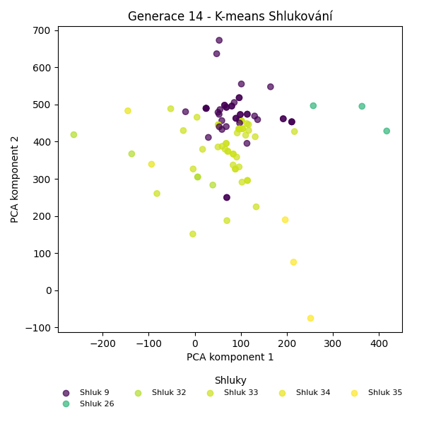

Posun centroidů mezi generací 13 → 14:
- Shluk 0: 138.6702
- Shluk 1: 85.9595
- Shluk 2: 142.7773
- Shluk 3: 533.5654
- Shluk 4: 126.8694
- Shluk 5: 206.7666
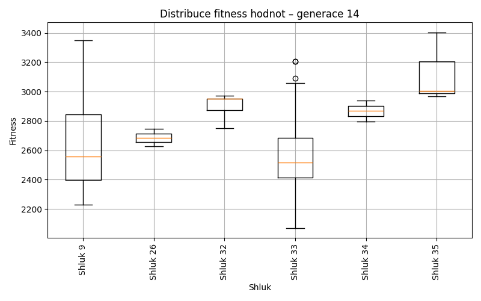
Generace 15

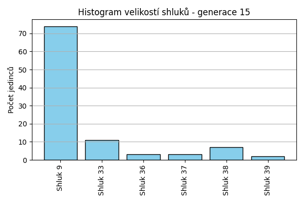
Posun centroidů mezi generací 14 → 15:
- Shluk 0: 341.8766
- Shluk 1: 112.6074
- Shluk 2: 351.3315
- Shluk 3: 493.1920
- Shluk 4: 194.6934
- Shluk 5: 1189.8661
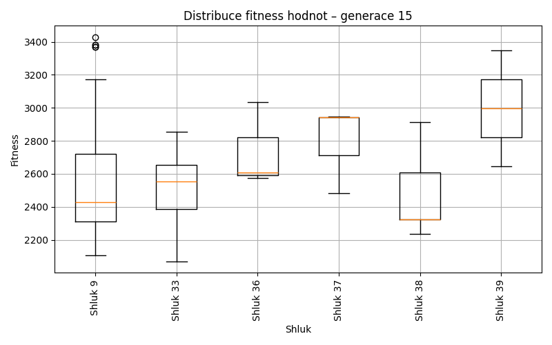
Generace 16
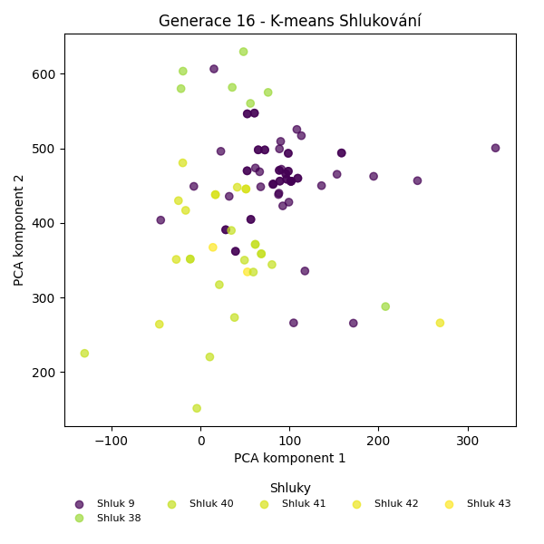

Posun centroidů mezi generací 15 → 16:
- Shluk 0: 719.4866
- Shluk 1: 629.7983
- Shluk 2: 415.7397
- Shluk 3: 0.0000
- Shluk 4: 148.4378
- Shluk 5: 1272.1680
Generace 17

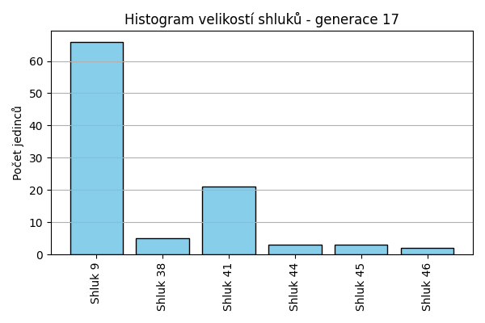
Posun centroidů mezi generací 16 → 17:
- Shluk 0: 48.7853
- Shluk 1: 1083.6392
- Shluk 2: 1139.8159
- Shluk 3: 1116.4313
- Shluk 4: 107.5664
- Shluk 5: 374.5052
Generace 18
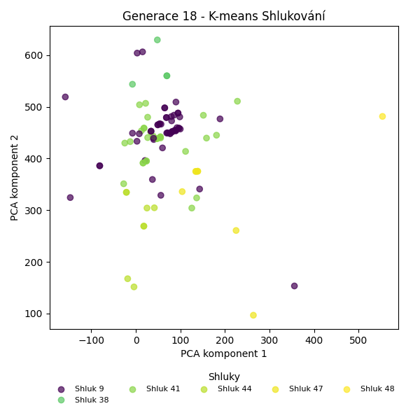

Posun centroidů mezi generací 17 → 18:
- Shluk 0: 58.0896
- Shluk 1: 624.3509
- Shluk 2: 558.5683
- Shluk 3: 1024.9561
- Shluk 4: 799.3545
- Shluk 5: 781.2375

Generace 19
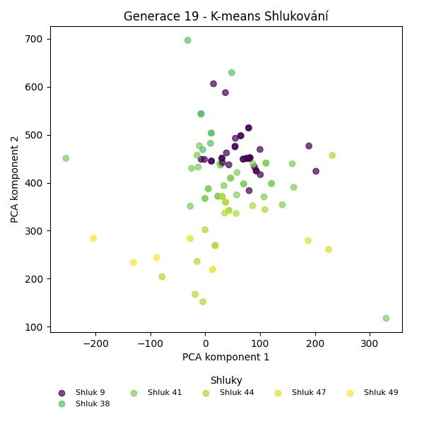

Posun centroidů mezi generací 18 → 19:
- Shluk 0: 34.4514
- Shluk 1: 767.1867
- Shluk 2: 456.5483
- Shluk 3: 675.1543
- Shluk 4: 555.3513
- Shluk 5: 999.4965
Generace 20
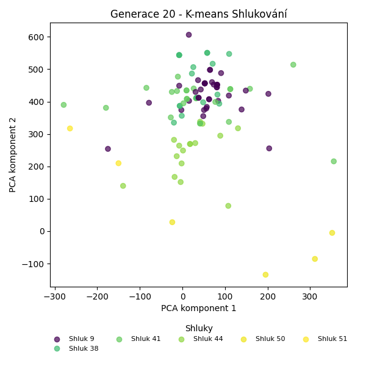

Posun centroidů mezi generací 19 → 20:
- Shluk 0: 90.9357
- Shluk 1: 811.8194
- Shluk 2: 1394.6957
- Shluk 3: 720.8200
- Shluk 4: 218.3739
- Shluk 5: 1087.8065

Generace 21


Posun centroidů mezi generací 20 → 21:
- Shluk 0: 52.7661
- Shluk 1: 759.4819
- Shluk 2: 1415.1439
- Shluk 3: 794.2697
- Shluk 4: 728.0519
- Shluk 5: 534.2995

Generace 22
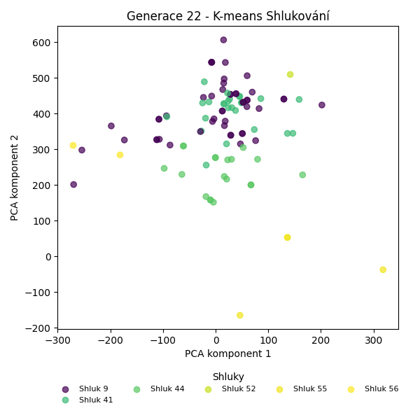

Posun centroidů mezi generací 21 → 22:
- Shluk 0: 20.7100
- Shluk 1: 63.3790
- Shluk 2: 1640.1340
- Shluk 3: 999.8870
- Shluk 4: 1039.7404
- Shluk 5: 710.6082

Generace 23
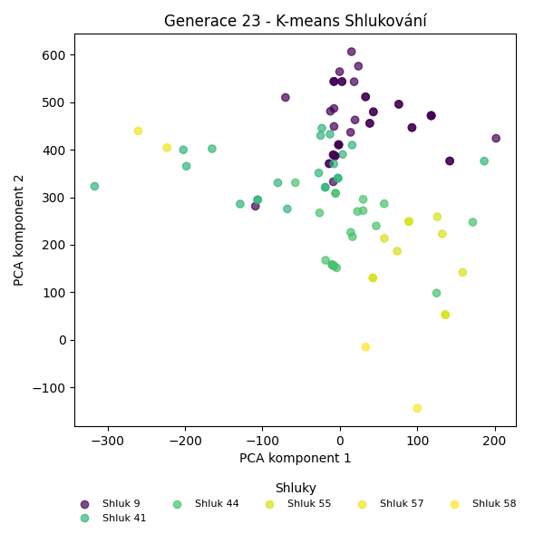
Posun centroidů mezi generací 22 → 23:
- Shluk 0: 36.0529
- Shluk 1: 126.4728
- Shluk 2: 753.3655
- Shluk 3: 299.4444
- Shluk 4: 185.6900
- Shluk 5: 776.5183

Generace 24


Posun centroidů mezi generací 23 → 24:
- Shluk 0: 44.5764
- Shluk 1: 1038.4838
- Shluk 2: 954.0716
- Shluk 3: 789.0087
- Shluk 4: 845.2264
- Shluk 5: 820.5011
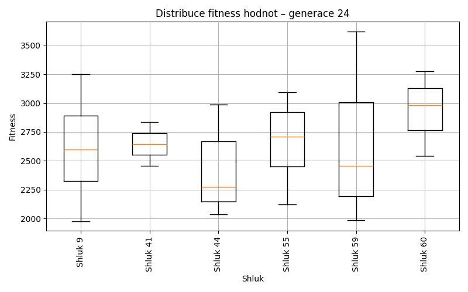
Generace 25

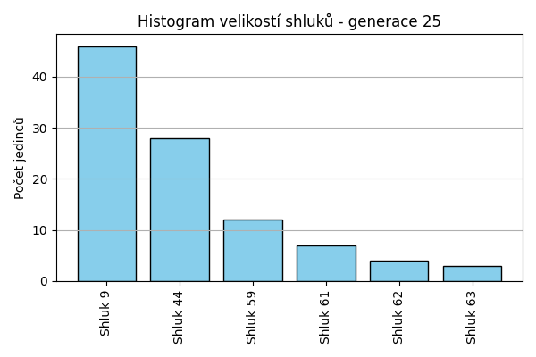
Posun centroidů mezi generací 24 → 25:
- Shluk 0: 54.3068
- Shluk 1: 1005.7339
- Shluk 2: 522.8885
- Shluk 3: 645.3980
- Shluk 4: 783.5143
- Shluk 5: 562.4627
Generace 26


Posun centroidů mezi generací 25 → 26:
- Shluk 0: 55.5710
- Shluk 1: 553.8613
- Shluk 2: 553.2751
- Shluk 3: 858.7191
- Shluk 4: 810.2486
- Shluk 5: 206.8501
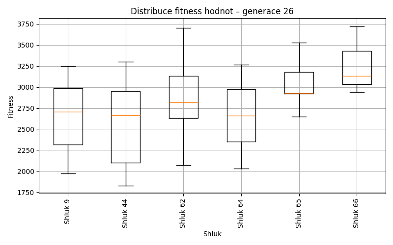
Generace 27
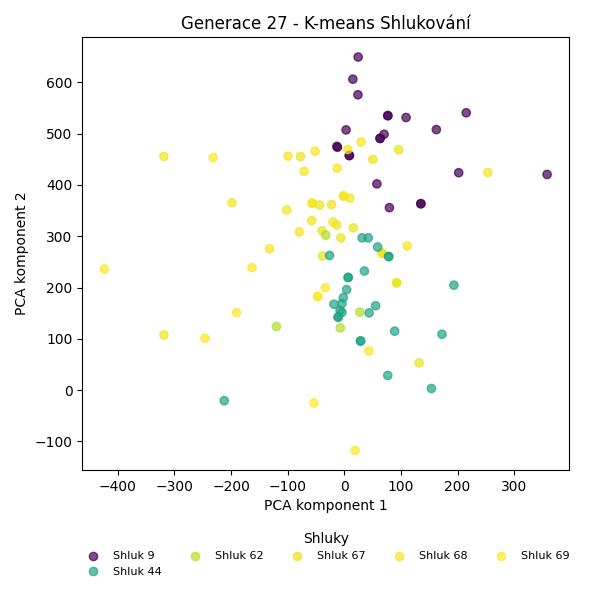
Posun centroidů mezi generací 26 → 27:
- Shluk 0: 70.1054
- Shluk 1: 484.9441
- Shluk 2: 713.3559
- Shluk 3: 759.8918
- Shluk 4: 737.3763
- Shluk 5: 1024.2711
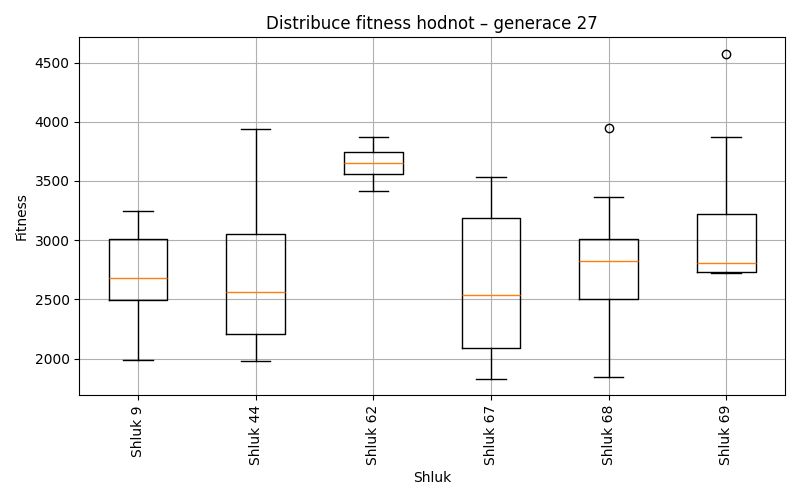
Generace 28

Posun centroidů mezi generací 27 → 28:
- Shluk 0: 26.0877
- Shluk 1: 160.7813
- Shluk 2: 165.7340
- Shluk 3: 324.5971
- Shluk 4: 759.6215
- Shluk 5: 927.9659

Generace 29


Posun centroidů mezi generací 28 → 29:
- Shluk 0: 34.5877
- Shluk 1: 106.5985
- Shluk 2: 191.1838
- Shluk 3: 226.7406
- Shluk 4: 775.8903
- Shluk 5: 919.8194

Generace 30

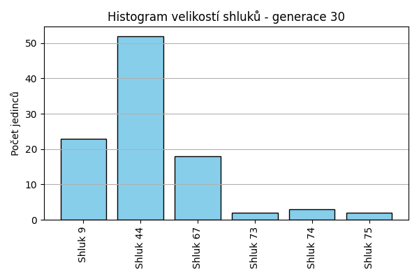
Posun centroidů mezi generací 29 → 30:
- Shluk 0: 41.0215
- Shluk 1: 642.6662
- Shluk 2: 499.5989
- Shluk 3: 283.0615
- Shluk 4: 809.7035
- Shluk 5: 836.4280

Generace 31


Posun centroidů mezi generací 30 → 31:
- Shluk 0: 48.1203
- Shluk 1: 184.8728
- Shluk 2: 723.1620
- Shluk 3: 723.3255
- Shluk 4: 1215.4775
- Shluk 5: 879.2016
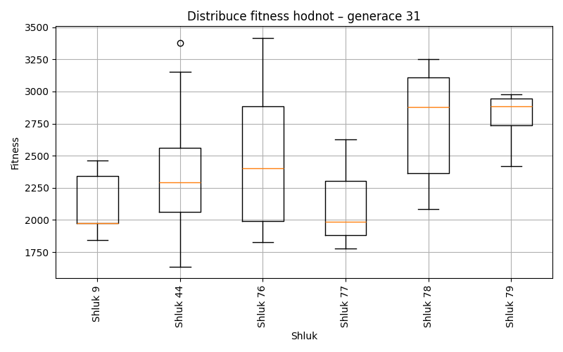
Generace 32
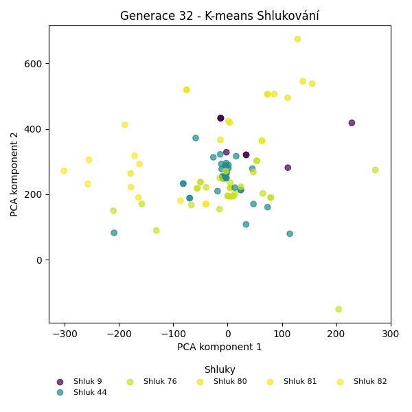
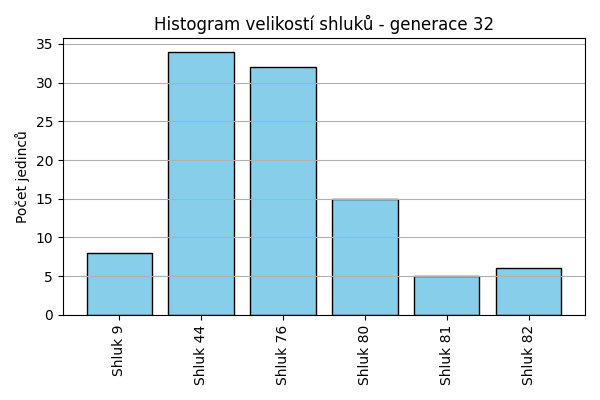
Posun centroidů mezi generací 31 → 32:
- Shluk 0: 52.1451
- Shluk 1: 189.9174
- Shluk 2: 680.0996
- Shluk 3: 926.9095
- Shluk 4: 1063.8267
- Shluk 5: 915.0117
Generace 33
Posun centroidů mezi generací 32 → 33:
- Shluk 0: 33.7405
- Shluk 1: 182.6261
- Shluk 2: 348.5940
- Shluk 3: 1094.5015
- Shluk 4: 860.5902
- Shluk 5: 785.0222

Generace 34
Posun centroidů mezi generací 33 → 34:
- Shluk 0: 37.4126
- Shluk 1: 156.0226
- Shluk 2: 860.8861
- Shluk 3: 1153.2849
- Shluk 4: 1189.7826
- Shluk 5: 954.4367

Generace 35

Posun centroidů mezi generací 34 → 35:
- Shluk 0: 53.6050
- Shluk 1: 597.2754
- Shluk 2: 724.3164
- Shluk 3: 989.4463
- Shluk 4: 1065.1497
- Shluk 5: 236.0568

Generace 36

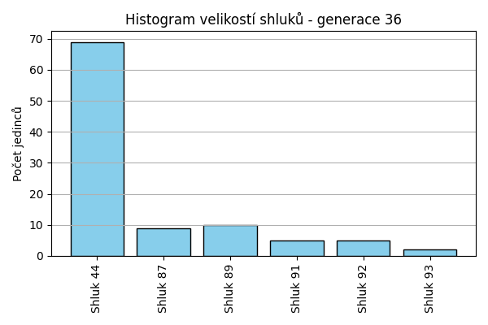
Posun centroidů mezi generací 35 → 36:
- Shluk 0: 27.1666
- Shluk 1: 80.3214
- Shluk 2: 54.9811
- Shluk 3: 950.1661
- Shluk 4: 688.9132
- Shluk 5: 1081.8135

Generace 37


Posun centroidů mezi generací 36 → 37:
- Shluk 0: 26.7035
- Shluk 1: 604.4265
- Shluk 2: 427.5593
- Shluk 3: 1067.0437
- Shluk 4: 863.1569
- Shluk 5: 1055.0796
Generace 38


Posun centroidů mezi generací 37 → 38:
- Shluk 0: 43.0701
- Shluk 1: 78.4439
- Shluk 2: 523.0697
- Shluk 3: 861.9294
- Shluk 4: 829.8412
- Shluk 5: 1112.6912

Generace 39

Posun centroidů mezi generací 38 → 39:
- Shluk 0: 46.2239
- Shluk 1: 126.8559
- Shluk 2: 587.1025
- Shluk 3: 658.8276
- Shluk 4: 687.3508
- Shluk 5: 896.3701

Generace 40
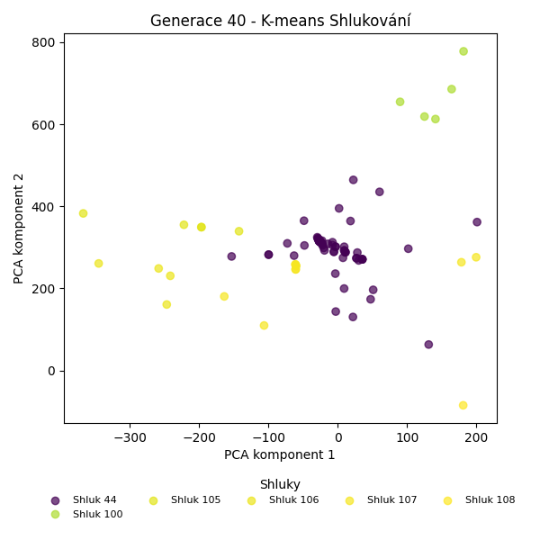

Posun centroidů mezi generací 39 → 40:
- Shluk 0: 73.7128
- Shluk 1: 497.0399
- Shluk 2: 757.7400
- Shluk 3: 654.4021
- Shluk 4: 743.1279
- Shluk 5: 821.6157

Generace 41


Posun centroidů mezi generací 40 → 41:
- Shluk 0: 61.0673
- Shluk 1: 216.7136
- Shluk 2: 323.8662
- Shluk 3: 616.2258
- Shluk 4: 1213.5254
- Shluk 5: 679.6712

Generace 42

Posun centroidů mezi generací 41 → 42:
- Shluk 0: 43.9181
- Shluk 1: 180.0943
- Shluk 2: 125.1125
- Shluk 3: 391.9609
- Shluk 4: 1285.9983
- Shluk 5: 1111.9116
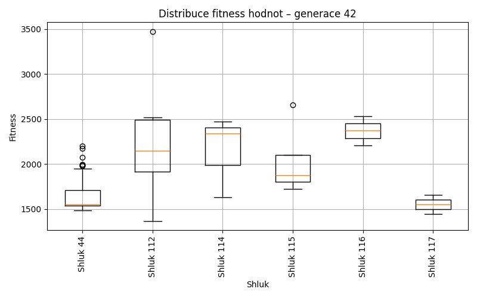
Generace 43

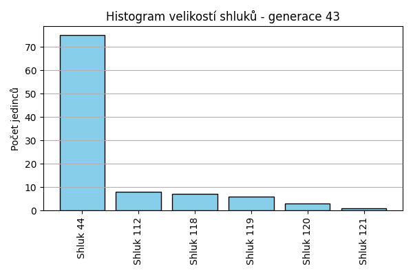
Posun centroidů mezi generací 42 → 43:
- Shluk 0: 27.5607
- Shluk 1: 35.2138
- Shluk 2: 686.1227
- Shluk 3: 778.6825
- Shluk 4: 922.1223
- Shluk 5: 1201.1228
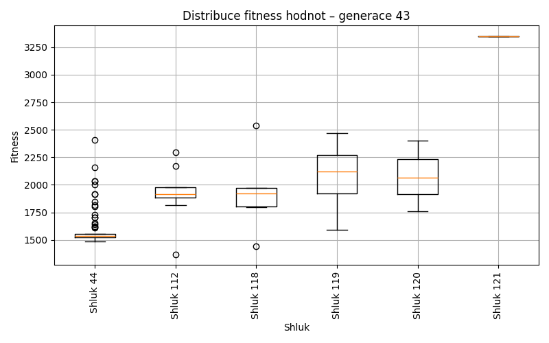
Generace 44


Posun centroidů mezi generací 43 → 44:
- Shluk 0: 32.5100
- Shluk 1: 58.3169
- Shluk 2: 923.3897
- Shluk 3: 833.0447
- Shluk 4: 882.7547
- Shluk 5: 1142.3163
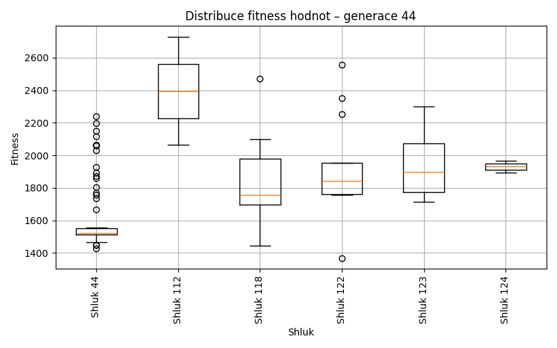
Generace 45

Posun centroidů mezi generací 44 → 45:
- Shluk 0: 34.7309
- Shluk 1: 85.2670
- Shluk 2: 730.5542
- Shluk 3: 866.9595
- Shluk 4: 918.2676
- Shluk 5: 1114.9306
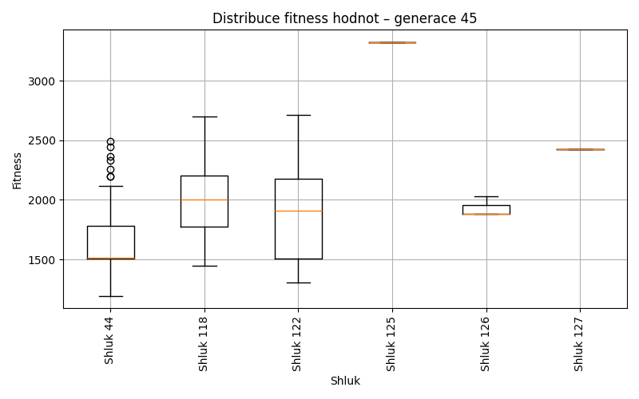
Generace 46

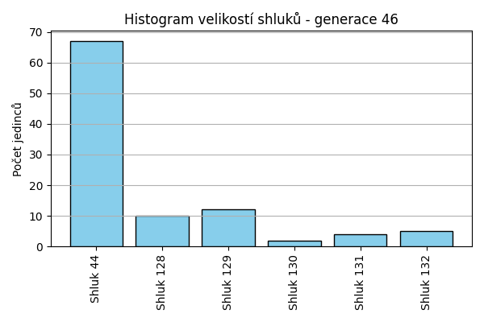
Posun centroidů mezi generací 45 → 46:
- Shluk 0: 49.5808
- Shluk 1: 75.7049
- Shluk 2: 676.4378
- Shluk 3: 933.0700
- Shluk 4: 167.6131
- Shluk 5: 1138.7518

Generace 47
Posun centroidů mezi generací 46 → 47:
- Shluk 0: 49.1728
- Shluk 1: 85.2098
- Shluk 2: 765.9814
- Shluk 3: 778.0715
- Shluk 4: 718.3168
- Shluk 5: 1062.7156
Generace 48

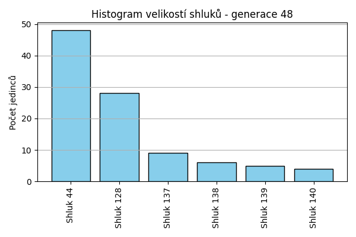
Posun centroidů mezi generací 47 → 48:
- Shluk 0: 91.3228
- Shluk 1: 58.4848
- Shluk 2: 305.4629
- Shluk 3: 691.7899
- Shluk 4: 600.4690
- Shluk 5: 294.8732
Generace 49

Posun centroidů mezi generací 48 → 49:
- Shluk 0: 128.9443
- Shluk 1: 97.8930
- Shluk 2: 891.4175
- Shluk 3: 376.5664
- Shluk 4: 1057.3979
- Shluk 5: 1238.3750
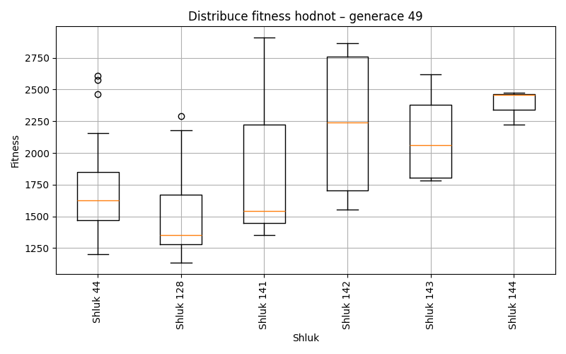
Generace 50

Posun centroidů mezi generací 49 → 50:
- Shluk 0: 120.8703
- Shluk 1: 92.7834
- Shluk 2: 872.0035
- Shluk 3: 388.1960
- Shluk 4: 1119.0024
- Shluk 5: 1090.9398

Generace 51

Posun centroidů mezi generací 50 → 51:
- Shluk 0: 200.1988
- Shluk 1: 110.6251
- Shluk 2: 688.3770
- Shluk 3: 211.0869
- Shluk 4: 836.8610
- Shluk 5: 844.5506
Generace 52
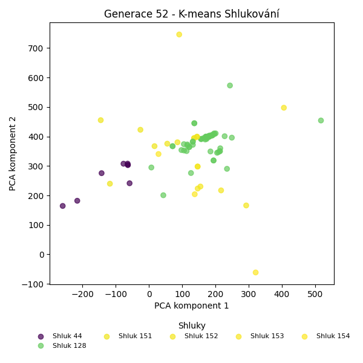

Posun centroidů mezi generací 51 → 52:
- Shluk 0: 280.7189
- Shluk 1: 618.9811
- Shluk 2: 352.8644
- Shluk 3: 815.6429
- Shluk 4: 187.8277
- Shluk 5: 1001.4590

Generace 53


Posun centroidů mezi generací 52 → 53:
- Shluk 0: 59.0226
- Shluk 1: 331.7959
- Shluk 2: 643.8321
- Shluk 3: 675.2203
- Shluk 4: 803.9071
- Shluk 5: 1008.4430

Generace 54
Posun centroidů mezi generací 53 → 54:
- Shluk 0: 25.6823
- Shluk 1: 433.5174
- Shluk 2: 581.4032
- Shluk 3: 838.7093
- Shluk 4: 751.1140
- Shluk 5: 1072.0283

Generace 55

Posun centroidů mezi generací 54 → 55:
- Shluk 0: 35.3066
- Shluk 1: 60.2972
- Shluk 2: 140.4473
- Shluk 3: 721.1474
- Shluk 4: 1107.9625
- Shluk 5: 1326.1805

Generace 56

Posun centroidů mezi generací 55 → 56:
- Shluk 0: 29.2372
- Shluk 1: 115.3254
- Shluk 2: 126.8011
- Shluk 3: 765.5234
- Shluk 4: 935.4191
- Shluk 5: 1153.2779

Generace 57
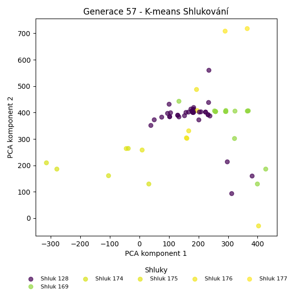
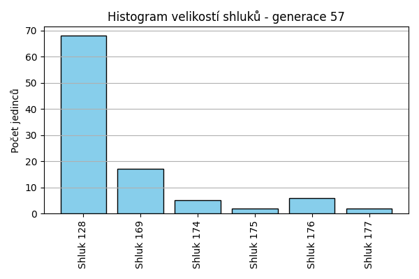
Posun centroidů mezi generací 56 → 57:
- Shluk 0: 39.4424
- Shluk 1: 171.6719
- Shluk 2: 423.7252
- Shluk 3: 415.6475
- Shluk 4: 411.4688
- Shluk 5: 1012.5660

Generace 58

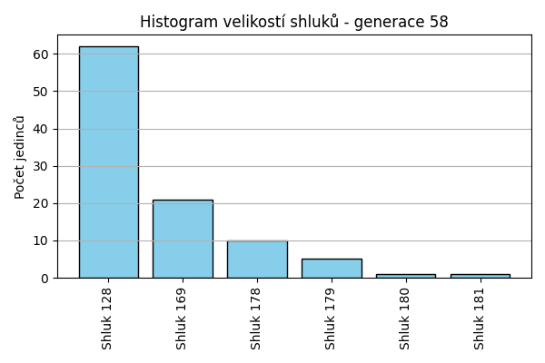
Posun centroidů mezi generací 57 → 58:
- Shluk 0: 32.8576
- Shluk 1: 147.0678
- Shluk 2: 104.5418
- Shluk 3: 46.3965
- Shluk 4: 864.9136
- Shluk 5: 1019.7372
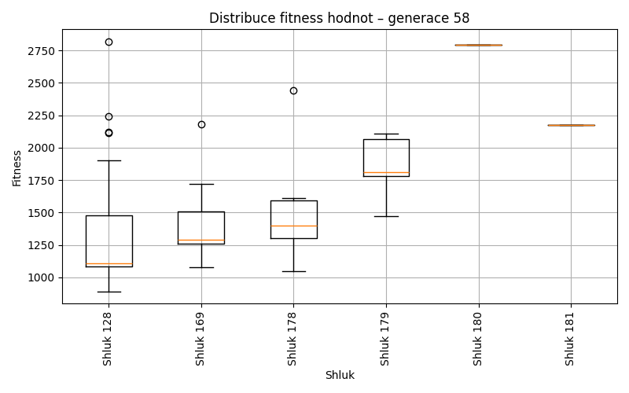
Generace 59

Posun centroidů mezi generací 58 → 59:
- Shluk 0: 64.9982
- Shluk 1: 316.2226
- Shluk 2: 80.1992
- Shluk 3: 109.4143
- Shluk 4: 1033.5943
- Shluk 5: 746.1720
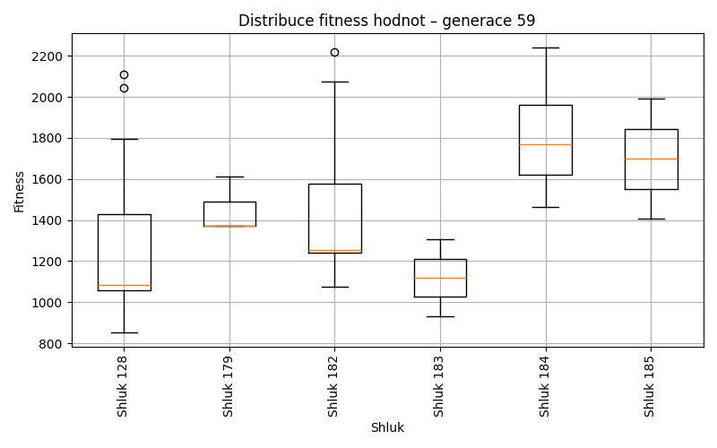
Generace 60


Posun centroidů mezi generací 59 → 60:
- Shluk 0: 413.3249
- Shluk 1: 396.5104
- Shluk 2: 70.1875
- Shluk 3: 305.5365
- Shluk 4: 853.3665
- Shluk 5: 1090.1763

Generace 61

Posun centroidů mezi generací 60 → 61:
- Shluk 0: 693.5666
- Shluk 1: 780.9367
- Shluk 2: 693.2072
- Shluk 3: 246.9981
- Shluk 4: 753.4722
- Shluk 5: 1149.7358
Generace 62
Posun centroidů mezi generací 61 → 62:
- Shluk 0: 27.9909
- Shluk 1: 921.7583
- Shluk 2: 1001.3787
- Shluk 3: 798.9825
- Shluk 4: 883.2972
- Shluk 5: 1103.5501
Generace 63


Posun centroidů mezi generací 62 → 63:
- Shluk 0: 21.5479
- Shluk 1: 1046.7448
- Shluk 2: 991.4826
- Shluk 3: 826.7608
- Shluk 4: 787.0641
- Shluk 5: 889.9825

Generace 64
Posun centroidů mezi generací 63 → 64:
- Shluk 0: 29.3776
- Shluk 1: 977.7561
- Shluk 2: 910.0911
- Shluk 3: 631.6115
- Shluk 4: 684.0925
- Shluk 5: 900.7770

Generace 65
Posun centroidů mezi generací 64 → 65:
- Shluk 0: 37.2542
- Shluk 1: 563.6262
- Shluk 2: 661.8287
- Shluk 3: 726.4467
- Shluk 4: 961.7629
- Shluk 5: 1045.4661

Generace 66

Posun centroidů mezi generací 65 → 66:
- Shluk 0: 30.0000
- Shluk 1: 649.9459
- Shluk 2: 574.1260
- Shluk 3: 1009.9359
- Shluk 4: 1056.3153
- Shluk 5: 1098.7430
Generace 67
Posun centroidů mezi generací 66 → 67:
- Shluk 0: 28.6395
- Shluk 1: 1046.1167
- Shluk 2: 510.3925
- Shluk 3: 859.8559
- Shluk 4: 825.2503
- Shluk 5: 1018.0207
Generace 68


Posun centroidů mezi generací 67 → 68:
- Shluk 0: 53.8985
- Shluk 1: 1034.9852
- Shluk 2: 613.3850
- Shluk 3: 559.4867
- Shluk 4: 1116.7251
- Shluk 5: 859.0040
Generace 69

Posun centroidů mezi generací 68 → 69:
- Shluk 0: 66.1466
- Shluk 1: 689.1402
- Shluk 2: 801.0121
- Shluk 3: 1017.1840
- Shluk 4: 1147.0410
- Shluk 5: 1134.4092
Generace 70

Posun centroidů mezi generací 69 → 70:
- Shluk 0: 55.2882
- Shluk 1: 108.4804
- Shluk 2: 178.4254
- Shluk 3: 1184.4104
- Shluk 4: 694.4769
- Shluk 5: 1063.1016
Generace 71

Posun centroidů mezi generací 70 → 71:
- Shluk 0: 109.8794
- Shluk 1: 91.8180
- Shluk 2: 56.9499
- Shluk 3: 1218.7133
- Shluk 4: 919.3598
- Shluk 5: 937.5438
Generace 72


Posun centroidů mezi generací 71 → 72:
- Shluk 0: 123.2623
- Shluk 1: 82.5931
- Shluk 2: 189.7635
- Shluk 3: 1215.2711
- Shluk 4: 1021.6721
- Shluk 5: 1057.9804
Generace 73

Posun centroidů mezi generací 72 → 73:
- Shluk 0: 82.9941
- Shluk 1: 96.8762
- Shluk 2: 165.0503
- Shluk 3: 949.2760
- Shluk 4: 471.3679
- Shluk 5: 378.9016

Generace 74
Posun centroidů mezi generací 73 → 74:
- Shluk 0: 37.2619
- Shluk 1: 58.2317
- Shluk 2: 158.0689
- Shluk 3: 711.2664
- Shluk 4: 351.8899
- Shluk 5: 1094.0579

Generace 75

Posun centroidů mezi generací 74 → 75:
- Shluk 0: 64.5163
- Shluk 1: 60.3713
- Shluk 2: 142.8577
- Shluk 3: 201.7525
- Shluk 4: 863.7993
- Shluk 5: 361.0468
Generace 76
Posun centroidů mezi generací 75 → 76:
- Shluk 0: 257.8362
- Shluk 1: 42.8976
- Shluk 2: 214.7620
- Shluk 3: 714.3015
- Shluk 4: 697.6861
- Shluk 5: 726.6907

Generace 77

Posun centroidů mezi generací 76 → 77:
- Shluk 0: 217.2760
- Shluk 1: 525.5496
- Shluk 2: 697.5721
- Shluk 3: 543.9969
- Shluk 4: 596.5453
- Shluk 5: 864.9081
Generace 78
Posun centroidů mezi generací 77 → 78:
- Shluk 0: 68.9694
- Shluk 1: 69.4795
- Shluk 2: 212.7188
- Shluk 3: 102.6671
- Shluk 4: 932.0859
- Shluk 5: 539.9555
Generace 79


Posun centroidů mezi generací 78 → 79:
- Shluk 0: 90.8383
- Shluk 1: 225.6205
- Shluk 2: 715.2043
- Shluk 3: 506.9504
- Shluk 4: 953.9570
- Shluk 5: 1225.0170
Generace 80

Posun centroidů mezi generací 79 → 80:
- Shluk 0: 68.6194
- Shluk 1: 145.3683
- Shluk 2: 157.7655
- Shluk 3: 189.9480
- Shluk 4: 989.0355
- Shluk 5: 1141.5023

Generace 81


Posun centroidů mezi generací 80 → 81:
- Shluk 0: 73.1914
- Shluk 1: 238.3484
- Shluk 2: 147.9038
- Shluk 3: 140.4764
- Shluk 4: 982.6362
- Shluk 5: 914.6913

Generace 82

Posun centroidů mezi generací 81 → 82:
- Shluk 0: 92.6477
- Shluk 1: 272.8103
- Shluk 2: 948.4156
- Shluk 3: 594.5407
- Shluk 4: 1012.1761
- Shluk 5: 976.6803
Generace 83
Posun centroidů mezi generací 82 → 83:
- Shluk 0: 253.9229
- Shluk 1: 156.5549
- Shluk 2: 215.7766
- Shluk 3: 791.1168
- Shluk 4: 958.0354
- Shluk 5: 1262.8846

Generace 84

Posun centroidů mezi generací 83 → 84:
- Shluk 0: 220.6518
- Shluk 1: 168.9832
- Shluk 2: 190.9172
- Shluk 3: 825.9168
- Shluk 4: 824.9592
- Shluk 5: 1108.9675

Generace 85

Posun centroidů mezi generací 84 → 85:
- Shluk 0: 299.3142
- Shluk 1: 139.3175
- Shluk 2: 137.9926
- Shluk 3: 480.2817
- Shluk 4: 718.4829
- Shluk 5: 760.1280

Generace 86


Posun centroidů mezi generací 85 → 86:
- Shluk 0: 347.2035
- Shluk 1: 629.0789
- Shluk 2: 572.8816
- Shluk 3: 638.4052
- Shluk 4: 334.1024
- Shluk 5: 939.5307
Generace 87

Posun centroidů mezi generací 86 → 87:
- Shluk 0: 283.4552
- Shluk 1: 149.7969
- Shluk 2: 640.7737
- Shluk 3: 38.7013
- Shluk 4: 230.7774
- Shluk 5: 889.9292

Generace 88

Posun centroidů mezi generací 87 → 88:
- Shluk 0: 134.3200
- Shluk 1: 254.9948
- Shluk 2: 568.4837
- Shluk 3: 662.5659
- Shluk 4: 251.4717
- Shluk 5: 461.9671
Generace 89
Posun centroidů mezi generací 88 → 89:
- Shluk 0: 84.6945
- Shluk 1: 319.2839
- Shluk 2: 394.5357
- Shluk 3: 877.3532
- Shluk 4: 853.9227
- Shluk 5: 1133.4343

Generace 90

Posun centroidů mezi generací 89 → 90:
- Shluk 0: 130.8262
- Shluk 1: 48.6166
- Shluk 2: 446.7217
- Shluk 3: 1034.5313
- Shluk 4: 821.1308
- Shluk 5: 932.7890

Generace 91

Posun centroidů mezi generací 90 → 91:
- Shluk 0: 516.4893
- Shluk 1: 477.4366
- Shluk 2: 1023.9580
- Shluk 3: 914.4313
- Shluk 4: 688.3240
- Shluk 5: 1213.2784
Generace 92
Posun centroidů mezi generací 91 → 92:
- Shluk 0: 15.1957
- Shluk 1: 697.8513
- Shluk 2: 874.2036
- Shluk 3: 966.7852
- Shluk 4: 828.9515
- Shluk 5: 306.3726
Generace 93

Posun centroidů mezi generací 92 → 93:
- Shluk 0: 10.4111
- Shluk 1: 714.3752
- Shluk 2: 940.6660
- Shluk 3: 71.1252
- Shluk 4: 843.4082
- Shluk 5: 842.3136

Generace 94

Posun centroidů mezi generací 93 → 94:
- Shluk 0: 26.1746
- Shluk 1: 712.5296
- Shluk 2: 1149.5129
- Shluk 3: 1044.9592
- Shluk 4: 716.5551
- Shluk 5: 904.4466
Generace 95


Posun centroidů mezi generací 94 → 95:
- Shluk 0: 29.6646
- Shluk 1: 148.6298
- Shluk 2: 1034.1548
- Shluk 3: 974.8995
- Shluk 4: 220.3317
- Shluk 5: 984.9228
Generace 96

Posun centroidů mezi generací 95 → 96:
- Shluk 0: 39.4381
- Shluk 1: 87.0052
- Shluk 2: 130.5831
- Shluk 3: 815.4239
- Shluk 4: 775.6617
- Shluk 5: 976.4854
Generace 97


Posun centroidů mezi generací 96 → 97:
- Shluk 0: 30.6295
- Shluk 1: 88.3055
- Shluk 2: 948.3456
- Shluk 3: 777.6820
- Shluk 4: 781.3963
- Shluk 5: 934.6404
Generace 98

Posun centroidů mezi generací 97 → 98:
- Shluk 0: 22.3547
- Shluk 1: 70.7580
- Shluk 2: 1029.8396
- Shluk 3: 916.7983
- Shluk 4: 692.8762
- Shluk 5: 333.1113
Generace 99

Posun centroidů mezi generací 98 → 99:
- Shluk 0: 46.8297
- Shluk 1: 68.5516
- Shluk 2: 1018.8538
- Shluk 3: 951.8868
- Shluk 4: 881.6815
- Shluk 5: 1266.5029
Generace 100

Posun centroidů mezi generací 99 → 100:
- Shluk 0: 51.6468
- Shluk 1: 48.7311
- Shluk 2: 974.5460
- Shluk 3: 352.5552
- Shluk 4: 1512.0608
- Shluk 5: 897.2163

Generace 101

Posun centroidů mezi generací 100 → 101:
- Shluk 0: 67.1523
- Shluk 1: 34.5772
- Shluk 2: 273.0061
- Shluk 3: 762.7390
- Shluk 4: 1519.1434
- Shluk 5: 527.5151
Generace 102

Posun centroidů mezi generací 101 → 102:
- Shluk 0: 615.1377
- Shluk 1: 108.2390
- Shluk 2: 479.2966
- Shluk 3: 1070.6192
- Shluk 4: 930.8834
- Shluk 5: 1211.5090

Generace 103

Posun centroidů mezi generací 102 → 103:
- Shluk 0: 598.2718
- Shluk 1: 740.5311
- Shluk 2: 89.1702
- Shluk 3: 990.1262
- Shluk 4: 876.7822
- Shluk 5: 1148.9111

Generace 104

Posun centroidů mezi generací 103 → 104:
- Shluk 0: 33.7998
- Shluk 1: 997.5155
- Shluk 2: 877.2470
- Shluk 3: 727.8875
- Shluk 4: 1090.0296
- Shluk 5: 1004.2226
Generace 105
Posun centroidů mezi generací 104 → 105:
- Shluk 0: 36.5236
- Shluk 1: 779.5517
- Shluk 2: 1065.0073
- Shluk 3: 618.1197
- Shluk 4: 933.9807
- Shluk 5: 977.0928

Generace 106
Posun centroidů mezi generací 105 → 106:
- Shluk 0: 40.4401
- Shluk 1: 250.9975
- Shluk 2: 836.3889
- Shluk 3: 868.0561
- Shluk 4: 834.3627
- Shluk 5: 896.7935
Generace 107

Posun centroidů mezi generací 106 → 107:
- Shluk 0: 29.9179
- Shluk 1: 926.6335
- Shluk 2: 752.9046
- Shluk 3: 333.4312
- Shluk 4: 925.8167
- Shluk 5: 751.5993

Generace 108

Posun centroidů mezi generací 107 → 108:
- Shluk 0: 27.1234
- Shluk 1: 321.7070
- Shluk 2: 430.3126
- Shluk 3: 634.2209
- Shluk 4: 1003.8796
- Shluk 5: 202.3970

Generace 109

Posun centroidů mezi generací 108 → 109:
- Shluk 0: 25.5830
- Shluk 1: 574.3696
- Shluk 2: 534.9403
- Shluk 3: 755.6328
- Shluk 4: 988.0298
- Shluk 5: 1045.7019

Generace 110


Posun centroidů mezi generací 109 → 110:
- Shluk 0: 33.9458
- Shluk 1: 608.4960
- Shluk 2: 693.9441
- Shluk 3: 1036.8565
- Shluk 4: 861.5729
- Shluk 5: 990.9821
Generace 111
Posun centroidů mezi generací 110 → 111:
- Shluk 0: 41.2619
- Shluk 1: 563.5174
- Shluk 2: 726.4887
- Shluk 3: 1007.9006
- Shluk 4: 753.4618
- Shluk 5: 795.6882

Generace 112

Posun centroidů mezi generací 111 → 112:
- Shluk 0: 66.5063
- Shluk 1: 563.2382
- Shluk 2: 602.5117
- Shluk 3: 1015.9221
- Shluk 4: 945.2860
- Shluk 5: 988.1189

Generace 113

Posun centroidů mezi generací 112 → 113:
- Shluk 0: 50.6904
- Shluk 1: 130.2855
- Shluk 2: 98.7248
- Shluk 3: 252.0633
- Shluk 4: 1043.6112
- Shluk 5: 1018.3190

Generace 114


Posun centroidů mezi generací 113 → 114:
- Shluk 0: 48.4360
- Shluk 1: 338.8473
- Shluk 2: 129.5433
- Shluk 3: 539.7986
- Shluk 4: 872.9349
- Shluk 5: 943.0764
Generace 115
Posun centroidů mezi generací 114 → 115:
- Shluk 0: 56.1019
- Shluk 1: 840.8774
- Shluk 2: 676.1471
- Shluk 3: 657.2880
- Shluk 4: 447.7793
- Shluk 5: 1232.5111

Generace 116


Posun centroidů mezi generací 115 → 116:
- Shluk 0: 69.0101
- Shluk 1: 94.9899
- Shluk 2: 65.4163
- Shluk 3: 957.5181
- Shluk 4: 696.6344
- Shluk 5: 1176.2783
Generace 117
Posun centroidů mezi generací 116 → 117:
- Shluk 0: 44.5859
- Shluk 1: 685.1189
- Shluk 2: 650.7736
- Shluk 3: 934.2214
- Shluk 4: 982.4045
- Shluk 5: 1020.6534
Generace 118
Posun centroidů mezi generací 117 → 118:
- Shluk 0: 85.7008
- Shluk 1: 219.8872
- Shluk 2: 766.4216
- Shluk 3: 751.4940
- Shluk 4: 814.0164
- Shluk 5: 956.4671
Generace 119


Posun centroidů mezi generací 118 → 119:
- Shluk 0: 28.8156
- Shluk 1: 95.9395
- Shluk 2: 795.5688
- Shluk 3: 561.4488
- Shluk 4: 284.3661
- Shluk 5: 317.5889
Generace 120
Posun centroidů mezi generací 119 → 120:
- Shluk 0: 48.3335
- Shluk 1: 879.8399
- Shluk 2: 665.6262
- Shluk 3: 131.6418
- Shluk 4: 1055.4246
- Shluk 5: 984.8159
Generace 121


Posun centroidů mezi generací 120 → 121:
- Shluk 0: 44.4214
- Shluk 1: 937.8236
- Shluk 2: 585.9274
- Shluk 3: 849.0603
- Shluk 4: 932.4018
- Shluk 5: 909.2859

Generace 122

Posun centroidů mezi generací 121 → 122:
- Shluk 0: 38.2270
- Shluk 1: 91.1301
- Shluk 2: 657.0286
- Shluk 3: 946.2427
- Shluk 4: 908.9664
- Shluk 5: 1085.4382

Generace 123
Posun centroidů mezi generací 122 → 123:
- Shluk 0: 34.5409
- Shluk 1: 243.5545
- Shluk 2: 198.7000
- Shluk 3: 621.2929
- Shluk 4: 1137.0838
- Shluk 5: 1092.0914

Generace 124

Posun centroidů mezi generací 123 → 124:
- Shluk 0: 54.7549
- Shluk 1: 326.0345
- Shluk 2: 762.0185
- Shluk 3: 747.0291
- Shluk 4: 1078.6231
- Shluk 5: 799.1589
Generace 125

Posun centroidů mezi generací 124 → 125:
- Shluk 0: 64.1621
- Shluk 1: 334.4175
- Shluk 2: 643.4990
- Shluk 3: 741.8603
- Shluk 4: 884.1911
- Shluk 5: 1030.8370

Generace 126

Posun centroidů mezi generací 125 → 126:
- Shluk 0: 50.7517
- Shluk 1: 56.9562
- Shluk 2: 840.0440
- Shluk 3: 83.4679
- Shluk 4: 1029.3217
- Shluk 5: 908.0255

Generace 127

Posun centroidů mezi generací 126 → 127:
- Shluk 0: 283.3579
- Shluk 1: 59.7032
- Shluk 2: 795.1876
- Shluk 3: 785.2488
- Shluk 4: 1199.4310
- Shluk 5: 841.9322

Generace 128

Posun centroidů mezi generací 127 → 128:
- Shluk 0: 378.5130
- Shluk 1: 590.8312
- Shluk 2: 664.7801
- Shluk 3: 760.4097
- Shluk 4: 1022.0777
- Shluk 5: 350.4749

Generace 129
Posun centroidů mezi generací 128 → 129:
- Shluk 0: 33.0771
- Shluk 1: 353.6930
- Shluk 2: 164.9205
- Shluk 3: 809.1381
- Shluk 4: 734.8411
- Shluk 5: 1067.0290

Generace 130
Posun centroidů mezi generací 129 → 130:
- Shluk 0: 25.1069
- Shluk 1: 532.7545
- Shluk 2: 658.6499
- Shluk 3: 981.4488
- Shluk 4: 989.6954
- Shluk 5: 885.3615

Generace 131
Posun centroidů mezi generací 130 → 131:
- Shluk 0: 35.3675
- Shluk 1: 139.3568
- Shluk 2: 854.5448
- Shluk 3: 777.2754
- Shluk 4: 904.5183
- Shluk 5: 1270.8735
Generace 132
Posun centroidů mezi generací 131 → 132:
- Shluk 0: 40.5386
- Shluk 1: 137.1736
- Shluk 2: 931.0407
- Shluk 3: 815.5097
- Shluk 4: 218.1781
- Shluk 5: 1370.9503
Generace 133
Posun centroidů mezi generací 132 → 133:
- Shluk 0: 23.8812
- Shluk 1: 78.8711
- Shluk 2: 782.4671
- Shluk 3: 1106.8231
- Shluk 4: 1057.4779
- Shluk 5: 1072.3567
Generace 134

Posun centroidů mezi generací 133 → 134:
- Shluk 0: 22.0532
- Shluk 1: 101.9164
- Shluk 2: 637.4106
- Shluk 3: 1164.4973
- Shluk 4: 1035.2048
- Shluk 5: 974.9457

Generace 135


Posun centroidů mezi generací 134 → 135:
- Shluk 0: 21.4918
- Shluk 1: 121.7029
- Shluk 2: 862.2219
- Shluk 3: 989.3749
- Shluk 4: 1112.3577
- Shluk 5: 986.0354
Generace 136

Posun centroidů mezi generací 135 → 136:
- Shluk 0: 24.3458
- Shluk 1: 627.5429
- Shluk 2: 837.0573
- Shluk 3: 888.7921
- Shluk 4: 1008.3573
- Shluk 5: 176.6690

Generace 137
Posun centroidů mezi generací 136 → 137:
- Shluk 0: 28.7026
- Shluk 1: 82.6063
- Shluk 2: 146.0301
- Shluk 3: 180.0681
- Shluk 4: 891.4299
- Shluk 5: 1099.5682
Generace 138

Posun centroidů mezi generací 137 → 138:
- Shluk 0: 26.3130
- Shluk 1: 73.0587
- Shluk 2: 527.0017
- Shluk 3: 758.6717
- Shluk 4: 780.4577
- Shluk 5: 1083.0349

Generace 139


Posun centroidů mezi generací 138 → 139:
- Shluk 0: 43.1751
- Shluk 1: 120.7556
- Shluk 2: 927.1429
- Shluk 3: 817.8159
- Shluk 4: 243.6032
- Shluk 5: 811.8326

Generace 140
Posun centroidů mezi generací 139 → 140:
- Shluk 0: 38.3988
- Shluk 1: 127.7068
- Shluk 2: 703.6789
- Shluk 3: 1043.0421
- Shluk 4: 829.2321
- Shluk 5: 844.5922
Generace 141

Posun centroidů mezi generací 140 → 141:
- Shluk 0: 27.5255
- Shluk 1: 222.5259
- Shluk 2: 189.2676
- Shluk 3: 744.8982
- Shluk 4: 1021.2788
- Shluk 5: 886.9483

Generace 142

Posun centroidů mezi generací 141 → 142:
- Shluk 0: 79.3411
- Shluk 1: 67.2595
- Shluk 2: 822.4575
- Shluk 3: 82.6651
- Shluk 4: 112.9594
- Shluk 5: 641.8009
Generace 143

Posun centroidů mezi generací 142 → 143:
- Shluk 0: 210.4592
- Shluk 1: 75.7068
- Shluk 2: 1023.1677
- Shluk 3: 621.2028
- Shluk 4: 935.1337
- Shluk 5: 139.9888

Generace 144

Posun centroidů mezi generací 143 → 144:
- Shluk 0: 48.5353
- Shluk 1: 39.4961
- Shluk 2: 407.5556
- Shluk 3: 830.3682
- Shluk 4: 893.9151
- Shluk 5: 895.5777
Generace 145


Posun centroidů mezi generací 144 → 145:
- Shluk 0: 857.6219
- Shluk 1: 45.6454
- Shluk 2: 814.8143
- Shluk 3: 606.6180
- Shluk 4: 329.9383
- Shluk 5: 918.4622
Generace 146

Posun centroidů mezi generací 145 → 146:
- Shluk 0: 802.4564
- Shluk 1: 466.2588
- Shluk 2: 617.9165
- Shluk 3: 663.8694
- Shluk 4: 276.8742
- Shluk 5: 857.8018
Generace 147


Posun centroidů mezi generací 146 → 147:
- Shluk 0: 19.6801
- Shluk 1: 81.8312
- Shluk 2: 608.3225
- Shluk 3: 1006.0709
- Shluk 4: 698.3356
- Shluk 5: 236.5371

Generace 148
Posun centroidů mezi generací 147 → 148:
- Shluk 0: 39.0624
- Shluk 1: 36.7262
- Shluk 2: 679.8667
- Shluk 3: 1025.5756
- Shluk 4: 1296.8402
- Shluk 5: 886.2881

Generace 149


Posun centroidů mezi generací 148 → 149:
- Shluk 0: 50.9616
- Shluk 1: 148.0742
- Shluk 2: 109.8149
- Shluk 3: 1016.2669
- Shluk 4: 1002.6380
- Shluk 5: 1216.0382
Generace 150
Posun centroidů mezi generací 149 → 150:
- Shluk 0: 55.9246
- Shluk 1: 740.9657
- Shluk 2: 816.3791
- Shluk 3: 671.2483
- Shluk 4: 993.5299
- Shluk 5: 867.8154
Generace 151

Posun centroidů mezi generací 150 → 151:
- Shluk 0: 38.0720
- Shluk 1: 243.1104
- Shluk 2: 844.6213
- Shluk 3: 568.1333
- Shluk 4: 1150.1463
- Shluk 5: 896.4528

Generace 152
Posun centroidů mezi generací 151 → 152:
- Shluk 0: 25.8684
- Shluk 1: 252.7634
- Shluk 2: 74.0970
- Shluk 3: 530.0292
- Shluk 4: 1177.7768
- Shluk 5: 802.7310

Generace 153
Posun centroidů mezi generací 152 → 153:
- Shluk 0: 39.5874
- Shluk 1: 48.7719
- Shluk 2: 122.3546
- Shluk 3: 738.2998
- Shluk 4: 846.7235
- Shluk 5: 1011.8192

Generace 154
Posun centroidů mezi generací 153 → 154:
- Shluk 0: 47.5740
- Shluk 1: 744.3886
- Shluk 2: 683.3832
- Shluk 3: 997.2841
- Shluk 4: 818.0020
- Shluk 5: 911.2420
Generace 155


Posun centroidů mezi generací 154 → 155:
- Shluk 0: 95.2233
- Shluk 1: 706.7834
- Shluk 2: 669.4153
- Shluk 3: 796.0978
- Shluk 4: 1232.0241
- Shluk 5: 1007.9374

Generace 156

Posun centroidů mezi generací 155 → 156:
- Shluk 0: 43.3891
- Shluk 1: 65.5504
- Shluk 2: 1089.2169
- Shluk 3: 724.0893
- Shluk 4: 856.3573
- Shluk 5: 1270.2566

Generace 157


Posun centroidů mezi generací 156 → 157:
- Shluk 0: 105.3182
- Shluk 1: 52.2376
- Shluk 2: 848.7716
- Shluk 3: 1168.8762
- Shluk 4: 638.1312
- Shluk 5: 1106.3174
Generace 158
Posun centroidů mezi generací 157 → 158:
- Shluk 0: 203.1245
- Shluk 1: 39.6968
- Shluk 2: 655.5241
- Shluk 3: 991.2783
- Shluk 4: 1005.6528
- Shluk 5: 1171.9424

Generace 159
Posun centroidů mezi generací 158 → 159:
- Shluk 0: 498.9066
- Shluk 1: 395.4510
- Shluk 2: 1121.5615
- Shluk 3: 721.1812
- Shluk 4: 963.0852
- Shluk 5: 830.6273

Generace 160

Posun centroidů mezi generací 159 → 160:
- Shluk 0: 40.8076
- Shluk 1: 181.9332
- Shluk 2: 1036.4775
- Shluk 3: 726.4660
- Shluk 4: 906.9135
- Shluk 5: 1327.1239
Generace 161
Posun centroidů mezi generací 160 → 161:
- Shluk 0: 38.9982
- Shluk 1: 237.8280
- Shluk 2: 850.6245
- Shluk 3: 756.6006
- Shluk 4: 885.6256
- Shluk 5: 1053.3257

Generace 162

Posun centroidů mezi generací 161 → 162:
- Shluk 0: 27.0512
- Shluk 1: 1031.3616
- Shluk 2: 772.5251
- Shluk 3: 776.1185
- Shluk 4: 996.3008
- Shluk 5: 547.6602
Generace 163

Posun centroidů mezi generací 162 → 163:
- Shluk 0: 22.5820
- Shluk 1: 1017.4147
- Shluk 2: 768.4317
- Shluk 3: 723.2052
- Shluk 4: 1049.0603
- Shluk 5: 899.0384
Generace 164
Posun centroidů mezi generací 163 → 164:
- Shluk 0: 20.2565
- Shluk 1: 799.6115
- Shluk 2: 885.6945
- Shluk 3: 843.3888
- Shluk 4: 1180.9652
- Shluk 5: 924.1960

Generace 165

Posun centroidů mezi generací 164 → 165:
- Shluk 0: 20.0071
- Shluk 1: 736.1078
- Shluk 2: 649.1272
- Shluk 3: 900.4667
- Shluk 4: 1136.0601
- Shluk 5: 1021.3478
Generace 166

Posun centroidů mezi generací 165 → 166:
- Shluk 0: 19.9373
- Shluk 1: 442.2458
- Shluk 2: 949.9876
- Shluk 3: 731.3538
- Shluk 4: 968.8507
- Shluk 5: 1003.7613
Generace 167
Posun centroidů mezi generací 166 → 167:
- Shluk 0: 39.9708
- Shluk 1: 66.0139
- Shluk 2: 919.9626
- Shluk 3: 835.0739
- Shluk 4: 902.1124
- Shluk 5: 838.3444

Generace 168


Posun centroidů mezi generací 167 → 168:
- Shluk 0: 37.4022
- Shluk 1: 187.1388
- Shluk 2: 567.7473
- Shluk 3: 1017.8730
- Shluk 4: 1077.9943
- Shluk 5: 902.3982
Generace 169


Posun centroidů mezi generací 168 → 169:
- Shluk 0: 35.5637
- Shluk 1: 174.6755
- Shluk 2: 679.6081
- Shluk 3: 783.8514
- Shluk 4: 912.0077
- Shluk 5: 1069.4985

Generace 170
Posun centroidů mezi generací 169 → 170:
- Shluk 0: 32.1316
- Shluk 1: 150.5678
- Shluk 2: 940.4607
- Shluk 3: 836.2542
- Shluk 4: 1004.2491
- Shluk 5: 1372.1140

Generace 171

Posun centroidů mezi generací 170 → 171:
- Shluk 0: 24.8383
- Shluk 1: 79.9340
- Shluk 2: 81.8902
- Shluk 3: 1070.8953
- Shluk 4: 993.3812
- Shluk 5: 1316.7093

Generace 172


Posun centroidů mezi generací 171 → 172:
- Shluk 0: 21.1946
- Shluk 1: 46.3649
- Shluk 2: 976.5771
- Shluk 3: 1037.5046
- Shluk 4: 761.8093
- Shluk 5: 1144.1228

Generace 173

Posun centroidů mezi generací 172 → 173:
- Shluk 0: 29.2204
- Shluk 1: 250.3237
- Shluk 2: 352.3171
- Shluk 3: 736.6653
- Shluk 4: 823.4470
- Shluk 5: 1183.1679

Generace 174

Posun centroidů mezi generací 173 → 174:
- Shluk 0: 44.9910
- Shluk 1: 110.2996
- Shluk 2: 871.3235
- Shluk 3: 842.6374
- Shluk 4: 985.9352
- Shluk 5: 888.8359

Generace 175


Posun centroidů mezi generací 174 → 175:
- Shluk 0: 58.0152
- Shluk 1: 102.0630
- Shluk 2: 639.0465
- Shluk 3: 994.2956
- Shluk 4: 1069.4064
- Shluk 5: 849.1151

Generace 176


Posun centroidů mezi generací 175 → 176:
- Shluk 0: 58.0439
- Shluk 1: 144.4214
- Shluk 2: 638.9030
- Shluk 3: 894.4562
- Shluk 4: 951.9961
- Shluk 5: 793.8716

Generace 177
Posun centroidů mezi generací 176 → 177:
- Shluk 0: 316.1860
- Shluk 1: 33.7481
- Shluk 2: 363.5545
- Shluk 3: 1110.7065
- Shluk 4: 1075.4526
- Shluk 5: 265.0760

Generace 178
Posun centroidů mezi generací 177 → 178:
- Shluk 0: 385.3317
- Shluk 1: 445.2641
- Shluk 2: 387.0665
- Shluk 3: 1101.0501
- Shluk 4: 905.1063
- Shluk 5: 1065.6984

Generace 179
Posun centroidů mezi generací 178 → 179:
- Shluk 0: 29.4298
- Shluk 1: 862.1821
- Shluk 2: 96.7101
- Shluk 3: 955.5705
- Shluk 4: 980.4692
- Shluk 5: 330.4587
Generace 180

Posun centroidů mezi generací 179 → 180:
- Shluk 0: 40.6003
- Shluk 1: 976.5715
- Shluk 2: 772.6631
- Shluk 3: 764.1621
- Shluk 4: 958.5031
- Shluk 5: 820.0855
Generace 181

Posun centroidů mezi generací 180 → 181:
- Shluk 0: 32.3800
- Shluk 1: 928.2968
- Shluk 2: 889.2982
- Shluk 3: 809.9497
- Shluk 4: 950.3595
- Shluk 5: 888.8134
Generace 182
Posun centroidů mezi generací 181 → 182:
- Shluk 0: 21.2592
- Shluk 1: 708.2930
- Shluk 2: 810.6017
- Shluk 3: 835.4787
- Shluk 4: 870.5782
- Shluk 5: 841.0247
Generace 183

Posun centroidů mezi generací 182 → 183:
- Shluk 0: 26.2956
- Shluk 1: 338.3472
- Shluk 2: 898.0098
- Shluk 3: 914.5757
- Shluk 4: 1108.0355
- Shluk 5: 833.9613

Generace 184
Posun centroidů mezi generací 183 → 184:
- Shluk 0: 24.9560
- Shluk 1: 1065.1864
- Shluk 2: 860.2347
- Shluk 3: 973.6611
- Shluk 4: 1036.8458
- Shluk 5: 1003.1540
Generace 185


Posun centroidů mezi generací 184 → 185:
- Shluk 0: 21.8806
- Shluk 1: 921.4820
- Shluk 2: 911.9058
- Shluk 3: 1015.3462
- Shluk 4: 746.7827
- Shluk 5: 1197.3890

Generace 186


Posun centroidů mezi generací 185 → 186:
- Shluk 0: 18.7425
- Shluk 1: 931.4546
- Shluk 2: 249.2366
- Shluk 3: 837.3274
- Shluk 4: 374.4936
- Shluk 5: 1081.5453

Generace 187

Posun centroidů mezi generací 186 → 187:
- Shluk 0: 15.6827
- Shluk 1: 811.7281
- Shluk 2: 819.6003
- Shluk 3: 952.3073
- Shluk 4: 1168.8649
- Shluk 5: 899.4193

Generace 188

Posun centroidů mezi generací 187 → 188:
- Shluk 0: 26.9577
- Shluk 1: 860.9227
- Shluk 2: 861.7868
- Shluk 3: 960.2394
- Shluk 4: 1282.3095
- Shluk 5: 1104.5989
Generace 189
Posun centroidů mezi generací 188 → 189:
- Shluk 0: 22.4223
- Shluk 1: 743.8685
- Shluk 2: 703.9578
- Shluk 3: 836.9186
- Shluk 4: 1177.5640
- Shluk 5: 90.3455
Generace 190

Posun centroidů mezi generací 189 → 190:
- Shluk 0: 30.6978
- Shluk 1: 922.2419
- Shluk 2: 877.6823
- Shluk 3: 499.9519
- Shluk 4: 999.9571
- Shluk 5: 1201.4154

Generace 191

Posun centroidů mezi generací 190 → 191:
- Shluk 0: 29.8502
- Shluk 1: 1007.6646
- Shluk 2: 1036.2068
- Shluk 3: 891.3791
- Shluk 4: 1142.8569
- Shluk 5: 1055.5691
Generace 192

Posun centroidů mezi generací 191 → 192:
- Shluk 0: 25.8123
- Shluk 1: 908.0380
- Shluk 2: 977.0575
- Shluk 3: 195.6685
- Shluk 4: 1131.8496
- Shluk 5: 838.1005

Generace 193


Posun centroidů mezi generací 192 → 193:
- Shluk 0: 23.1176
- Shluk 1: 997.0306
- Shluk 2: 745.2569
- Shluk 3: 958.9801
- Shluk 4: 952.9771
- Shluk 5: 1133.4806
Generace 194

Posun centroidů mezi generací 193 → 194:
- Shluk 0: 36.8512
- Shluk 1: 1065.2149
- Shluk 2: 1280.0010
- Shluk 3: 1113.7782
- Shluk 4: 1224.4793
- Shluk 5: 1167.3781
Generace 195

Posun centroidů mezi generací 194 → 195:
- Shluk 0: 25.2411
- Shluk 1: 912.0428
- Shluk 2: 1456.3821
- Shluk 3: 1113.7704
- Shluk 4: 1043.2058
- Shluk 5: 1007.4324
Generace 196


Posun centroidů mezi generací 195 → 196:
- Shluk 0: 27.6596
- Shluk 1: 979.5472
- Shluk 2: 1035.6679
- Shluk 3: 883.3177
- Shluk 4: 949.6042
- Shluk 5: 111.6337

Generace 197
Posun centroidů mezi generací 196 → 197:
- Shluk 0: 24.3832
- Shluk 1: 942.4133
- Shluk 2: 470.5526
- Shluk 3: 944.6459
- Shluk 4: 786.7687
- Shluk 5: 1082.2238

Generace 198


Posun centroidů mezi generací 197 → 198:
- Shluk 0: 31.6087
- Shluk 1: 940.8260
- Shluk 2: 1174.8711
- Shluk 3: 851.2569
- Shluk 4: 255.7025
- Shluk 5: 928.9717
Generace 199

Posun centroidů mezi generací 198 → 199:
- Shluk 0: 28.0031
- Shluk 1: 1004.0178
- Shluk 2: 255.5285
- Shluk 3: 1086.1280
- Shluk 4: 658.0057
- Shluk 5: 1137.9215

Generace 200

Posun centroidů mezi generací 199 → 200:
- Shluk 0: 21.7312
- Shluk 1: 953.7584
- Shluk 2: 880.0029
- Shluk 3: 1008.5932
- Shluk 4: 791.7944
- Shluk 5: 1022.2066

Generace 201

Posun centroidů mezi generací 200 → 201:
- Shluk 0: 29.4863
- Shluk 1: 972.6518
- Shluk 2: 976.5621
- Shluk 3: 611.7781
- Shluk 4: 827.1245
- Shluk 5: 833.9518
Generace 202
Posun centroidů mezi generací 201 → 202:
- Shluk 0: 22.7231
- Shluk 1: 848.3306
- Shluk 2: 908.2072
- Shluk 3: 829.5263
- Shluk 4: 956.5748
- Shluk 5: 853.3004
Generace 203
Posun centroidů mezi generací 202 → 203:
- Shluk 0: 25.4292
- Shluk 1: 696.9854
- Shluk 2: 848.7609
- Shluk 3: 904.0058
- Shluk 4: 1447.0965
- Shluk 5: 1065.7044

Generace 204


Posun centroidů mezi generací 203 → 204:
- Shluk 0: 29.8423
- Shluk 1: 797.8798
- Shluk 2: 836.0564
- Shluk 3: 979.2705
- Shluk 4: 1361.0378
- Shluk 5: 1251.4377

Generace 205

Posun centroidů mezi generací 204 → 205:
- Shluk 0: 29.9079
- Shluk 1: 786.6457
- Shluk 2: 700.1203
- Shluk 3: 1091.1809
- Shluk 4: 1071.0360
- Shluk 5: 1261.7594
Generace 206


Posun centroidů mezi generací 205 → 206:
- Shluk 0: 25.2064
- Shluk 1: 663.1275
- Shluk 2: 770.4768
- Shluk 3: 1142.1862
- Shluk 4: 1127.1340
- Shluk 5: 1054.8905
Generace 207
Posun centroidů mezi generací 206 → 207:
- Shluk 0: 32.0735
- Shluk 1: 787.0817
- Shluk 2: 1104.0054
- Shluk 3: 107.6444
- Shluk 4: 989.3255
- Shluk 5: 377.8852

Generace 208

Posun centroidů mezi generací 207 → 208:
- Shluk 0: 33.0184
- Shluk 1: 882.1875
- Shluk 2: 1101.7131
- Shluk 3: 996.2982
- Shluk 4: 284.2641
- Shluk 5: 1114.7367

Generace 209

Posun centroidů mezi generací 208 → 209:
- Shluk 0: 20.8358
- Shluk 1: 844.4777
- Shluk 2: 861.2498
- Shluk 3: 907.5430
- Shluk 4: 1058.0539
- Shluk 5: 1227.3767

Generace 210

Posun centroidů mezi generací 209 → 210:
- Shluk 0: 20.2978
- Shluk 1: 892.7750
- Shluk 2: 785.0593
- Shluk 3: 962.7936
- Shluk 4: 1275.2726
- Shluk 5: 1072.5098

Generace 211

Posun centroidů mezi generací 210 → 211:
- Shluk 0: 15.1039
- Shluk 1: 951.4856
- Shluk 2: 845.9365
- Shluk 3: 1021.5294
- Shluk 4: 1195.3526
- Shluk 5: 1059.1356
Generace 212


Posun centroidů mezi generací 211 → 212:
- Shluk 0: 19.2825
- Shluk 1: 1044.4003
- Shluk 2: 890.1022
- Shluk 3: 978.5925
- Shluk 4: 107.0437
- Shluk 5: 1054.4155

Generace 213
Posun centroidů mezi generací 212 → 213:
- Shluk 0: 24.3366
- Shluk 1: 1174.7012
- Shluk 2: 936.2353
- Shluk 3: 894.3277
- Shluk 4: 884.4612
- Shluk 5: 1115.5208

Generace 214


Posun centroidů mezi generací 213 → 214:
- Shluk 0: 15.5148
- Shluk 1: 1015.7130
- Shluk 2: 998.0755
- Shluk 3: 959.2691
- Shluk 4: 1121.3935
- Shluk 5: 1058.6745
Generace 215
Posun centroidů mezi generací 214 → 215:
- Shluk 0: 24.8822
- Shluk 1: 914.9779
- Shluk 2: 987.4306
- Shluk 3: 938.4332
- Shluk 4: 1175.8478
- Shluk 5: 398.7224

Generace 216

Posun centroidů mezi generací 215 → 216:
- Shluk 0: 17.8524
- Shluk 1: 1028.5813
- Shluk 2: 1002.9818
- Shluk 3: 921.7749
- Shluk 4: 761.9651
- Shluk 5: 857.2670
Generace 217

Posun centroidů mezi generací 216 → 217:
- Shluk 0: 36.4125
- Shluk 1: 985.1883
- Shluk 2: 1088.7768
- Shluk 3: 896.0867
- Shluk 4: 582.1299
- Shluk 5: 942.4386

Generace 218


Posun centroidů mezi generací 217 → 218:
- Shluk 0: 33.7608
- Shluk 1: 891.7162
- Shluk 2: 984.3420
- Shluk 3: 811.7990
- Shluk 4: 892.3758
- Shluk 5: 994.2816

Generace 219


Posun centroidů mezi generací 218 → 219:
- Shluk 0: 24.0134
- Shluk 1: 673.7043
- Shluk 2: 855.5630
- Shluk 3: 785.7915
- Shluk 4: 1085.4527
- Shluk 5: 903.4295